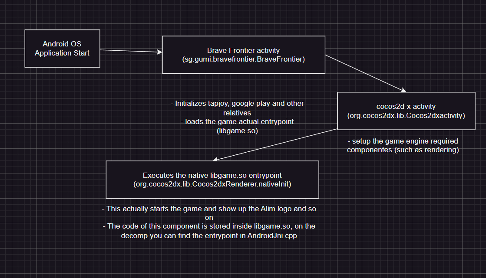
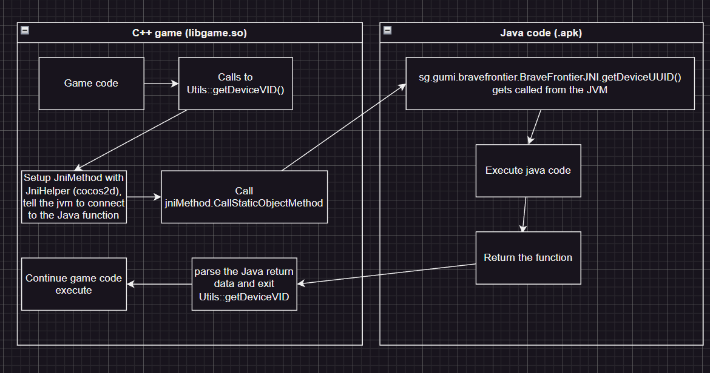

General Architecture¶
Server¶
Brave Frontier uses an external game server for initial authentication, this was done to support multiple auths such as Apple or Facebook one.
This server is known as the Gumi Live Api, and is responsable for billing, account managment and dynamic background and version checking.
Once the login has been successful, the game talks back to one main server which was written in PHP, this server is known as the GME server and it governates all the server oprations that is being done inside Brave Frontier.
An external CDN server (Amazon S3), was also used for resource downloading.
Raid servers were separated from the original Brave Frontier GME server and they act as their own living entities separated from the rest, the game supported more than one Raid server in which, each of them, had their own specific URL access.
Client¶
The client is written in C++ with the use of the Cocos2d-x (v2) engine, the game code is stored in binary form, in Android is inside the lib folder (libgame.so) while in Windows it’s the actual executable (BraveFrontier.exe)
Cocos2d-x, for letting the game startup and access specific functionalities of the Android API which are not, by default, exposed to the C++ API, allows to implement a custom Java startup on top of the existing Cocos2d-x (which sets up rendering and so on). This is the reason why Brave Frontier, on top of the actual game C++ code, contains utility and helping functions stored inside the Java part, which does a bunch of important things such as Server packet cryptation.
The following picture descrives how Brave Frontier starts up in the Android code:
NOTE: You can find this code inside Classesfor the C++ version and proj.androidsrc for the Java version in the Client decomp.

The Android OS will start the game based from the specification of the AndroidManifest, therefore it will launch BF base class
The base class with initialize itself and all the extra components like Facebook, Tapjoy, Google Play and so on
The base class will also load the actual game binary (libgame.so)
The base class will now call cocos2d-x initialization, which starts up components like rendering
Finally, once everything is ready, the main native entrypoint is executed and the execution of the code passes from Java to C++.
Java interopratibility¶
As we have Java and C++ going on in the Android version, the following diagram shows an example of the function ‘std::string Utils::getDeviceUUID()’ which will communicate back to the Java function ‘String sg.gumi.bravefrontier.BraveFrontierJNI.getDeviceUUID()’
In the way Brave Frontier is structured, almost all game-related Java interopratibility code is stored inside the BraveFrontierJNI class.
The following picture shows what happens when the game will attempt to do a Java call from C++:
NOTE: You can find the code inside the decomp, look for Utils.cpp inside Classes and BraveFrontierJNI.java for how the implementation was done.

Cocos2d-x provides utilities functions to simplify the work of interopratibility, this code is only present in the Android version of the game.